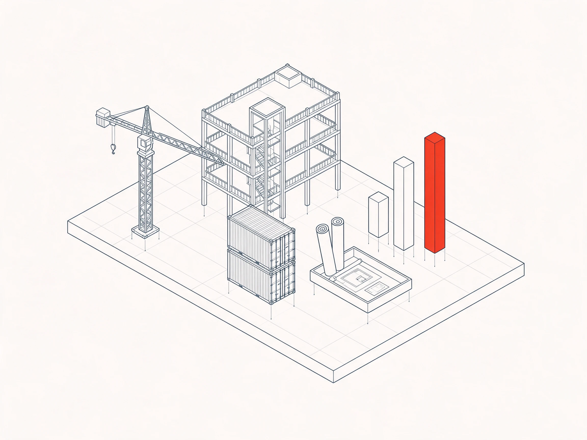
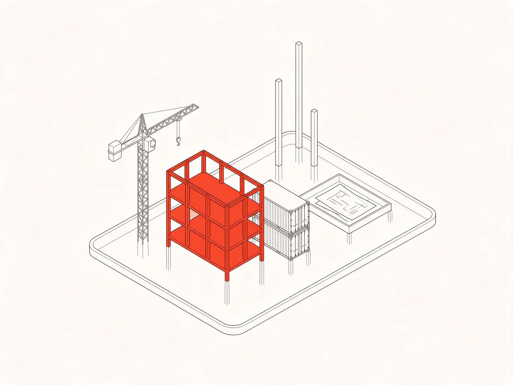
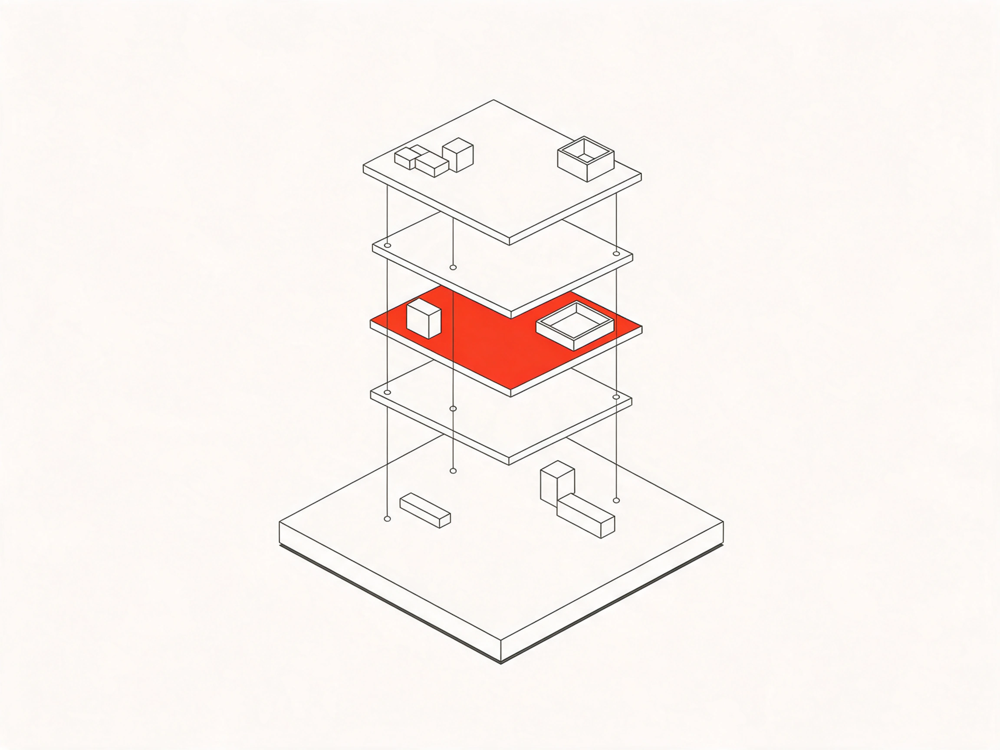
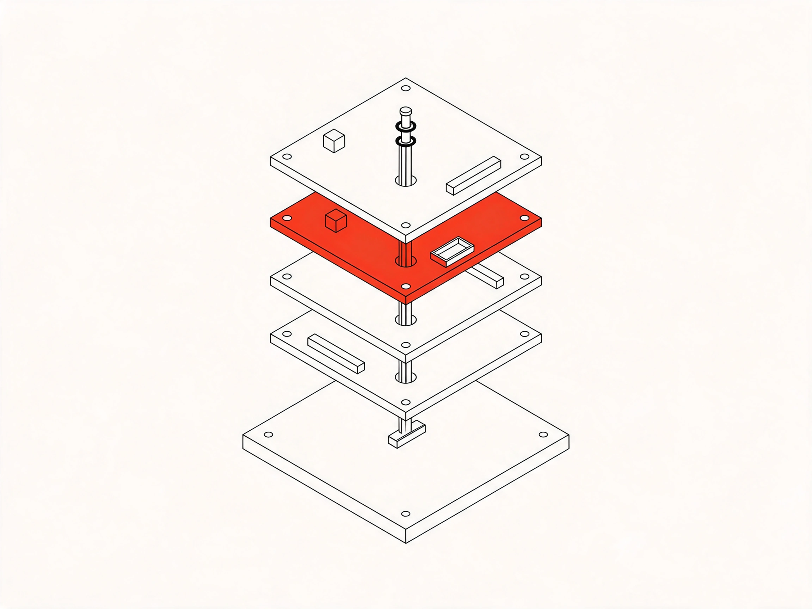
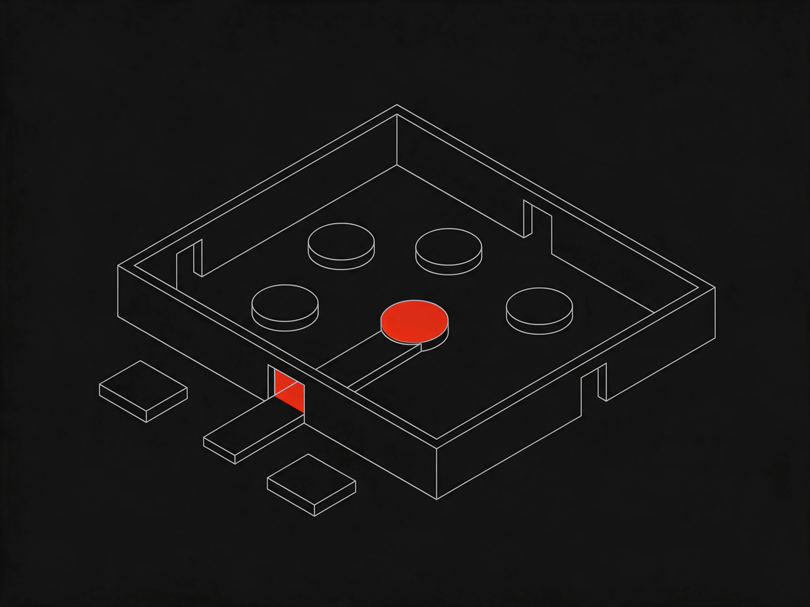
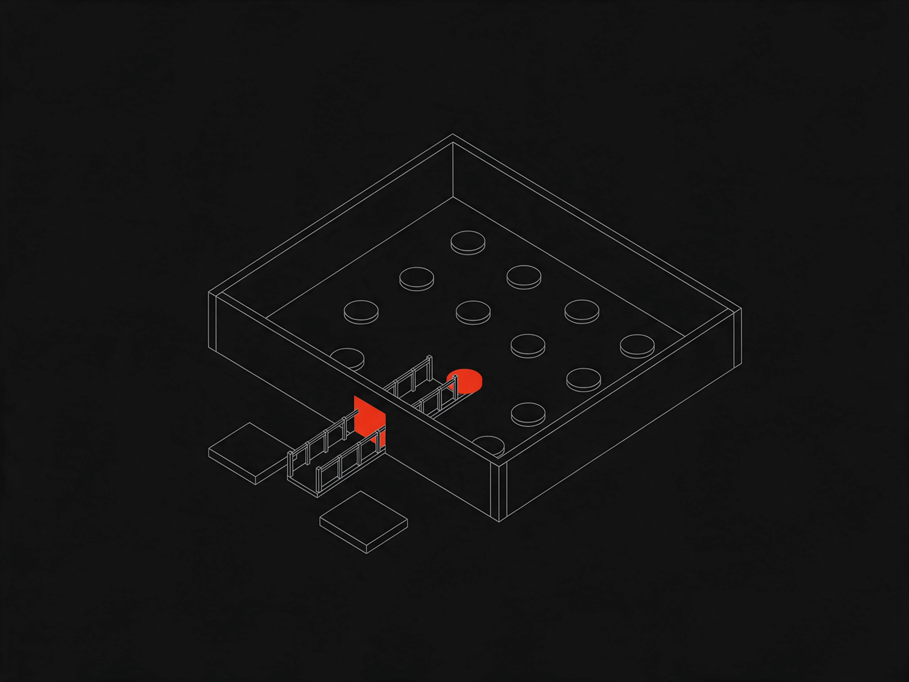
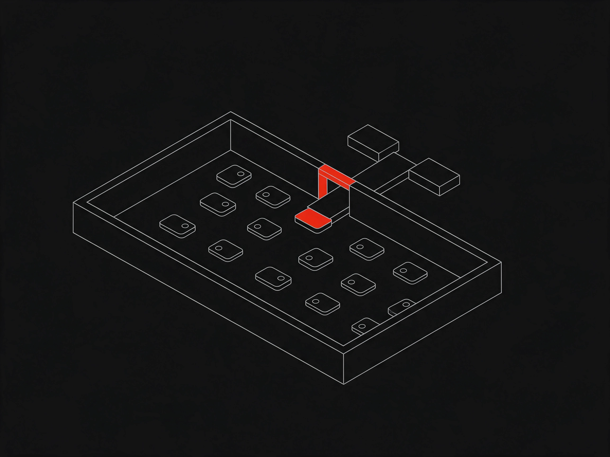
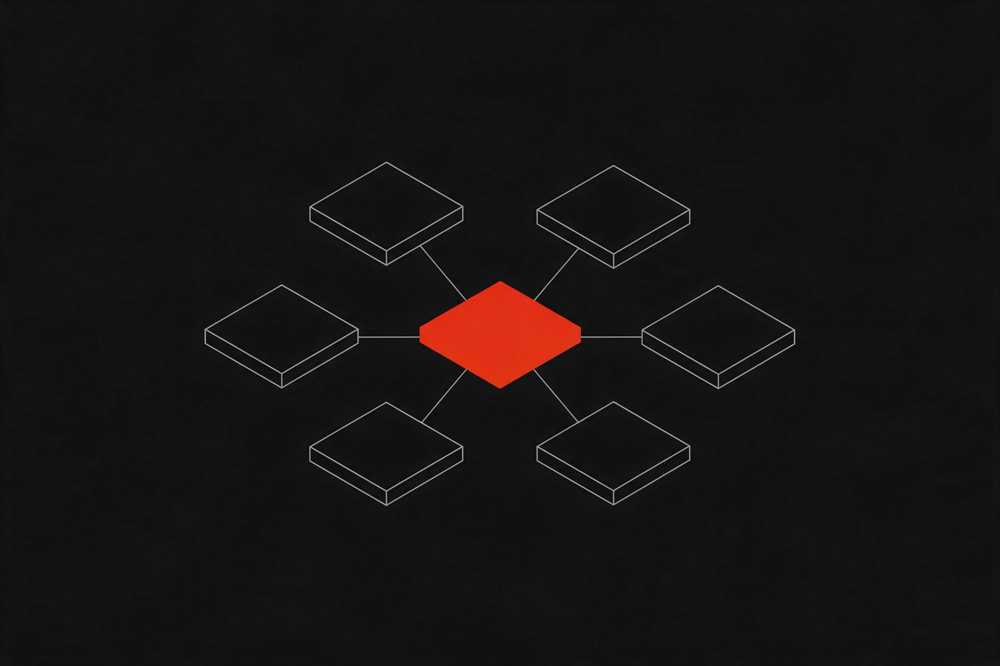
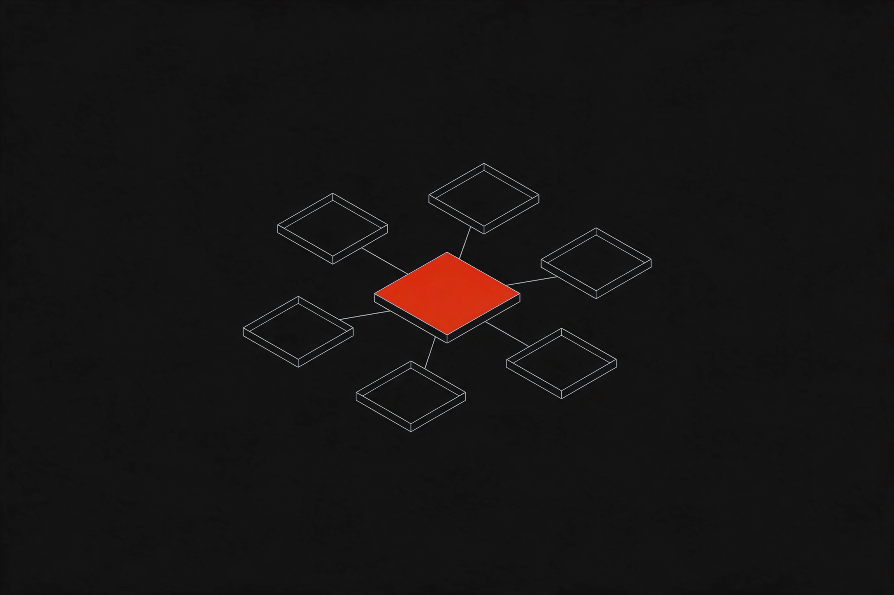
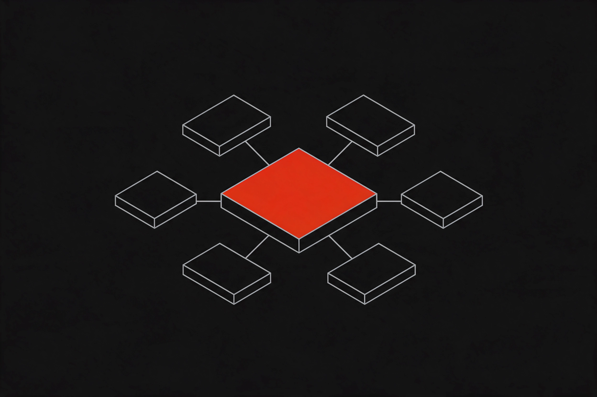

WorkHub: четыре правки
Ничего из этого на страницу ещё не поставлено. Выберите вариант в каждом блоке — или скажите, что переделать.
Две секции на странице тёмные, поэтому для них иллюстрации нарисованы в обратном виде: светлая линия на фоне #121212, тот же самый цвет, что у панели и у тёмной полосы. Фон у всех кадров подогнан попиксельно, стыка не будет.
Вместо схемы дашборда — иллюстрация
Сейчас справа стоит нарисованная нами панель с показателями. Настоящих снимков WorkHub у нас нет, и такая панель — это придуманные цифры. Иллюстрация честнее и держит стиль остальных страниц.




Четыре экрана — привести к одному виду
Сейчас четыре панели устроены по-разному: в двух строки, в двух плитки с полосками, поэтому столбцы не совпадают, низ у панелей рваный, а красные полоски загрузки читаются как тревога. Ниже — две раскладки с одинаковой анатомией строки во всех четырёх панелях.
Phases, dates and who is on them — in one plan instead of a spreadsheet.
Who is free, who is booked, and whose qualifications are about to expire.
Safety documents, deviations and inspections with a complete audit trail.
What was approved, what is spent, and where the hours came from.
Вместо таблицы прав — иллюстрация
Секция тёмная, поэтому кадры нарисованы светлой линией по фону #121212 — такому же, как у полосы. Рамки вокруг картинки не будет.



Кадр на фоне самой панели
Вы правы: светлый кадр на чёрной панели читался вставленной карточкой. Новые кадры нарисованы по фону #121212 — ровно цвет панели, стык пропадает. Заодно композиция стала спокойнее: шесть одинаковых модулей вокруг одного красного центра, без сваленной кучи.




Левая панель «Before WorkHub» остаётся как есть: у неё тёплая подложка, и светлый кадр там уже совпадает с фоном.